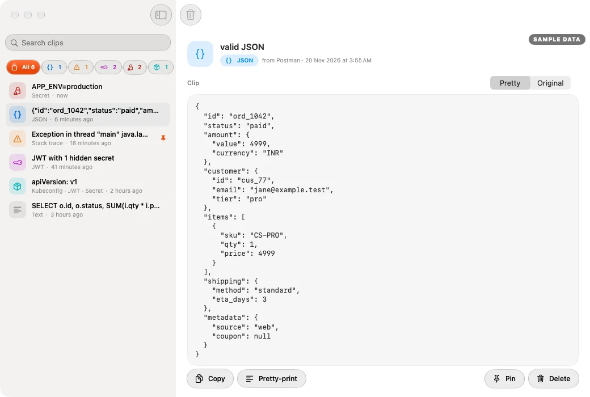
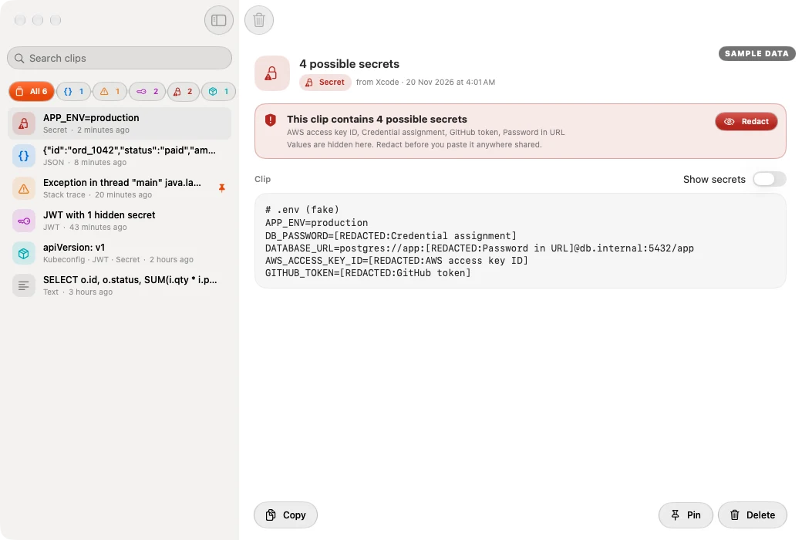
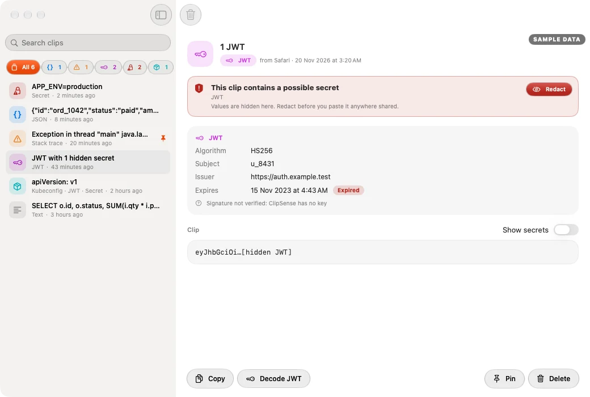
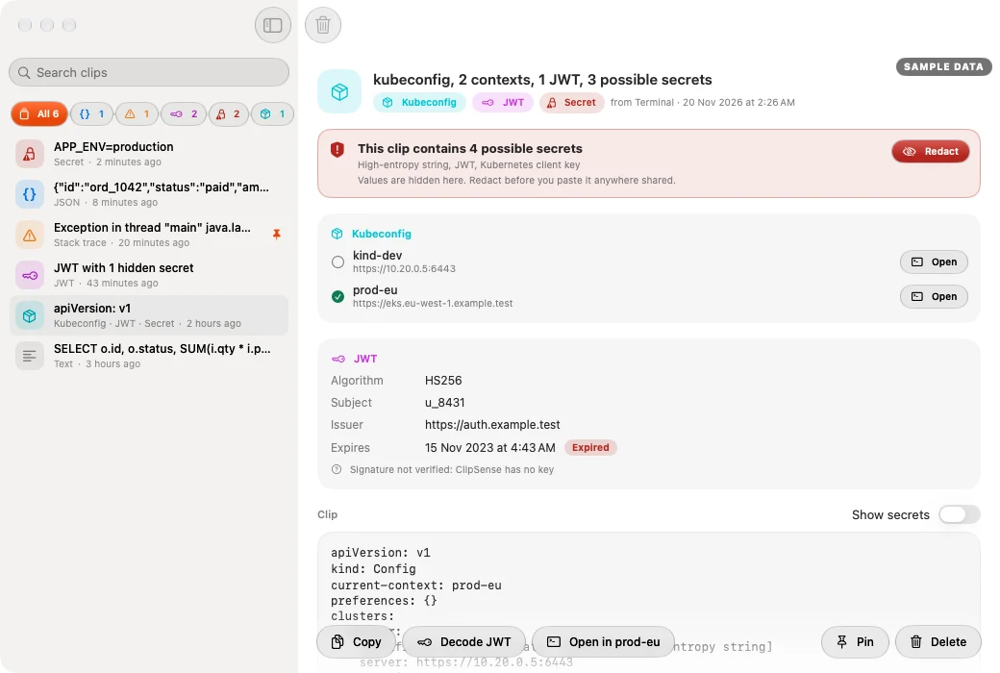
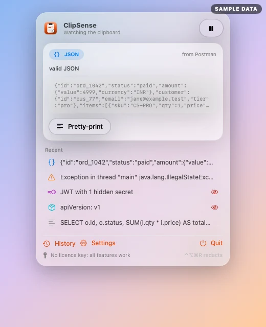

Zyvor · content-aware clipboard
ClipSense
The clipboard that knows what you copied.
Stays on this Mac. ClipSense recognises stack traces, JSON, kubeconfigs, secrets and JWTs, and redacts, pretty-prints or decodes them in one click. History is encrypted with a key in your Keychain, and the app has no network entitlement.
Download the 30-day trialLearn more
macOS 27 or later · Apple silicon · notarized · Free 30-day trial key: sales@zyvor.dev

Copy anything. Leak nothing.
Concealed clips from password managers are never read. Secrets are masked by default. Nothing leaves your Mac.
Features
Recognise
It knows what you copied.
Stack traces, JSON, kubeconfigs, secrets and JWTs are recognised the moment they hit the clipboard, with the right action one click away. History keeps the original, so nothing is lost.
Redact
Secrets never leave by accident.
AWS, GitHub, Slack, Stripe and Google keys, private keys, bearer tokens, URL passwords and high-entropy strings are shown masked. Control-Option-Command-R redacts the current clipboard from anywhere. By default, clips that contain secrets are never written to disk.

Decode
JWTs, readable.
See the claims and expiry of a token without pasting it into a website. ClipSense decodes the header and payload on your Mac and says plainly that it does not verify the signature.

Clusters
Kubeconfig in, context out.
Copy a kubeconfig and ClipSense lists its contexts. Open in Cluster Context starts a Terminal on a private copy and leaves your own ~/.kube/config untouched. The copy is deleted when the shell exits.

Menu bar
Right there when you need it.
A glass popover from the menu bar shows your latest clips and their actions. Shortcuts for everything: Command-Return copy, Shift-Command-P pretty-print, Shift-Command-R redact, Shift-Command-D decode.

Get started in three steps.
Download
Get
ClipSense-0.2.0.dmgfrom the release page. The SHA-256 is below and inClipSense-0.2.0.dmg.sha256.Install
Open the DMG and drag ClipSense to Applications. It requires macOS 27 or later on Apple silicon and lives in the menu bar.
Get a trial key
Write to sales@zyvor.dev for a free 30-day trial key. It works without one.
ClipSense 0.2.0 for Mac · SHA-256
9e7fcf271e334ab4699e8ccc806ca9d805099927c0db25fd7c970c1c5fee3980Verify: echo "9e7fcf271e334ab4699e8ccc806ca9d805099927c0db25fd7c970c1c5fee3980 ClipSense-0.2.0.dmg" | shasum -a 256 -c
Trial and licence.
ClipSense is a paid app, with a free 30-day trial key from sales@zyvor.dev. Price: ₹1,499 per Mac, one-time, including GST and one year of updates (about US$15). Teams of 5 or more Macs: ₹1,249 per Mac, by invoice. To buy, contact sales@zyvor.dev. It never switches features off: with no key, or after a trial ends, everything keeps working and a status line says where you stand.
Questions, answered.
Does ClipSense send anything over the network?
No. It ships with an empty entitlements file and the hardened runtime: no network client entitlement. Check it yourself with codesign -d --entitlements - /Applications/ClipSense.app. Note that it is not sandboxed.
Does it read my password manager?
No. Clips marked concealed, transient or auto-generated, clips from known password-manager types, and copies made while a known password manager was in front are skipped and only counted, never stored.
How is history stored?
One AES-256-GCM encrypted file in Application Support. The key is random and lives only in your login Keychain. If the Keychain refuses, history stays in memory; there is no plaintext fallback. Clips over 256 KB are not recorded.
Will macOS ask about pasteboard access?
It may. macOS can show “Allow paste from other apps” the first time an app reads the pasteboard without a paste. The Welcome window explains it first. If you deny it, ClipSense stops reading and says so; nothing is switched off by licensing.
Is there a free trial?
Yes: a free 30-day trial key from sales@zyvor.dev. Without a key everything still works.
What happens without a key, or when a trial ends?
Nothing is disabled. A status line shows where your licence stands.
How much does it cost?
Price: ₹1,499 per Mac, one-time, including GST and one year of updates (about US$15). Teams of 5 or more Macs: ₹1,249 per Mac, by invoice. Write to sales@zyvor.dev to buy.
Are the screenshots real?
They are the real app windows rendered with invented sample data and fake secrets, not captures of anyone's clipboard.
Which macOS versions?
macOS 27 or later, Apple silicon.
Early release. Beyond its automated self-tests, the interactive click-through, the macOS pasteboard-access prompt, VoiceOver and a clean-Mac install have not been tested by us.